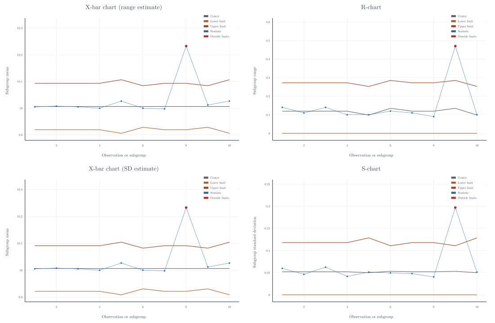

X-bar, R and S charts for rational subgroups
Abstract
Each row contains synthetic diameter measurements from one setup. The first six rows establish the baseline. Later rows include shifts in the mean and within-setup spread, and the number of measurements per row can vary.
Fit, monitor and plot
#include <dm/dm.hpp>
namespace spc = datamunge::stats;
using datamunge::graphics::RLayout;
void show_signals(const spc::ControlChart& chart) {
for (const auto& p : chart.points)
if (p.outside)
std::print("| {} | {} | {:.3f} | {:.3f} | {:.3f} |\n",
chart.title, p.index, p.value, p.lower, p.upper);
}
int main() {
const std::vector<std::vector<double>> diameters{
{9.94, 10.02, 10.08, 9.98}, {9.96, 10.01, 10.07, 9.99},
{9.97, 10.03, 10.08, 9.94}, {9.95, 9.99, 10.01, 10.05},
{9.97, 10.07, 10.04}, {9.96, 10.03, 10.06, 10.01, 9.94},
{9.93, 10.00, 10.04, 10.02}, {10.19, 10.25, 10.21, 10.28},
{9.75, 10.22, 10.17, 9.88, 10.04}, {9.97, 10.04, 10.07}
};
const spc::ControlChartOptions baseline{.baseline_size = 6};
const auto mean_r = spc::xbar_chart(diameters, baseline);
const auto range = spc::r_chart(diameters, baseline);
const auto mean_s = spc::xbar_s_chart(diameters, baseline);
const auto sd = spc::s_chart(diameters, baseline);
std::print("| Chart | Setup | Statistic | Lower | Upper |\n"
"| --- | ---: | ---: | ---: | ---: |\n");
for (const auto* chart : {&mean_r, &range, &mean_s, &sd}) show_signals(*chart);
std::filesystem::create_directories("build");
RLayout::create(2, 2).size(1100, 720).add(mean_r.plot()).add(range.plot())
.add(mean_s.plot()).add(sd.plot()).save_svg("build/subgroup_charts.svg");
}| Chart | Setup | Statistic | Lower | Upper |
|---|---|---|---|---|
| X-bar chart (range estimate) | 8 | 10.232 | 9.919 | 10.093 |
| R-chart | 9 | 0.470 | 0.000 | 0.285 |
| X-bar chart (SD estimate) | 8 | 10.232 | 9.922 | 10.091 |
| S-chart | 9 | 0.197 | 0.000 | 0.111 |

Interpret the chart
The X-bar charts use the same grand mean with different estimates of the within-subgroup scale. Compare setup eight, where the location changes, with setup nine, where the spread grows. The normal range constants restrict the range-based pair to subgroups of two through ten. The SD-based pair uses sample-SD moments and accepts any subgroup size of at least two.